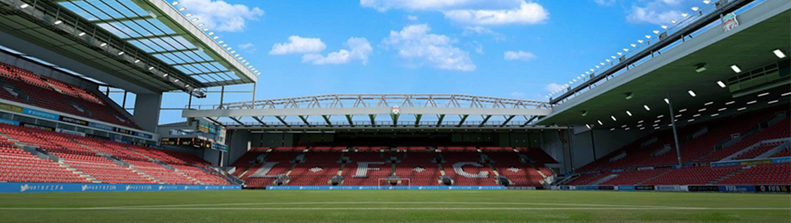

Anfield
Anfield: The Legendary Home of Liverpool FC
Anfield, the historic stadium of Liverpool FC, holds a special place in the hearts of football fans around the world. With its rich heritage, iconic atmosphere, and glorious history, it stands as a symbol of passion, success, and unwavering support.
A Footballing Icon
Anfield has been a pillar of the footballing world since its establishment in 1884. It has witnessed countless memorable matches and has been the stage for legendary players, cementing its status as a true footballing icon.
The Kop's Roar
The Kop, Anfield's famous stand, is known for its passionate and vocal supporters. The chants, songs, and waves of red scarves create an electrifying atmosphere that resonates throughout the stadium, inspiring Liverpool's players and intimidating visiting teams.
Legends and Glorious Moments
Anfield has been graced by some of the greatest players in football history. Legends like Kenny Dalglish, Steven Gerrard, and Ian Rush have showcased their skills on this hallowed ground, contributing to the club's numerous domestic and international triumphs.
A Legacy of Success
Anfield has been a witness to Liverpool's remarkable success. The stadium has seen the club lift numerous league titles, FA Cups, and European trophies, including the famous Champions League triumphs that have forever etched Liverpool's name in footballing history.
A Fortress of Passion
Anfield is more than just a stadium; it is a fortress of passion. The unwavering loyalty and dedication of Liverpool's supporters, combined with the club's rich traditions and values, create an indomitable spirit that reverberates within the stadium's walls.
A Must-Visit Destination
For any football enthusiast, a pilgrimage to Anfield is a must. The stadium tour offers an opportunity to walk through the players' tunnel, sit in the manager's dugout, and explore the club's museum, providing an immersive experience that celebrates the history and culture of Liverpool FC.
Forever Anfield
Anfield is not just a place; it is a feeling. It is the collective heartbeat of the Liverpool faithful, a source of inspiration, and a symbol of unity. For generations of fans, Anfield will forever hold a special place as the spiritual home of Liverpool FC.
- Liverpool - England.
- 53,394 Spectators.
- Sixth biggest Stadium in England.